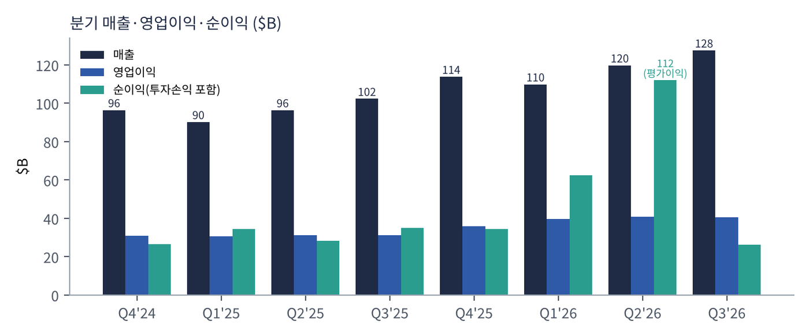
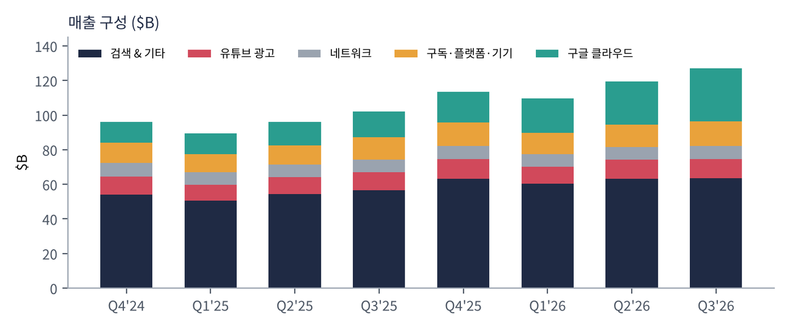
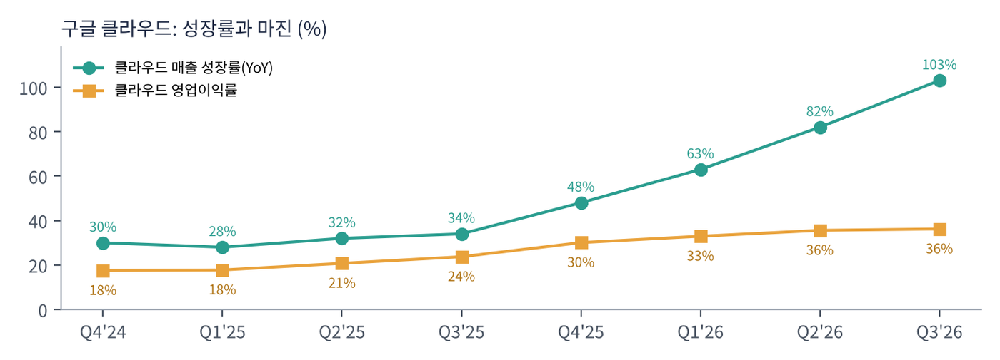
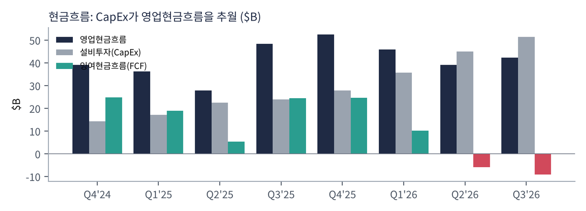
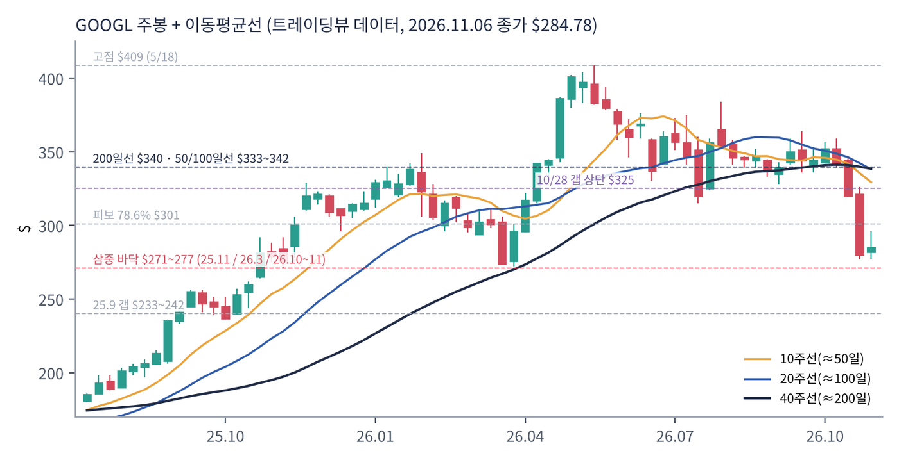
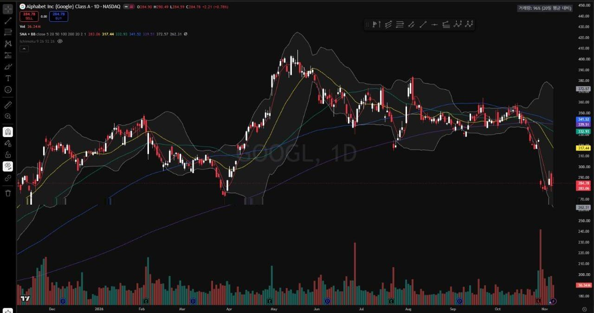

알파벳은 구글의 지주회사다. 검색·유튜브·안드로이드·크롬·지메일·지도 등 사용자 수십억 명 규모의 서비스에서 광고로 돈을 벌고, 클라우드(GCP·워크스페이스·TPU)로 기업에 AI 인프라와 솔루션을 판다. 자율주행 웨이모 같은 장기 프로젝트는 '기타 투자(Other Bets)'로 묶는다.
| 항목 | 내용 |
|---|---|
| 종목 | Alphabet Inc. 클래스 A (GOOGL) / 클래스 C (GOOG) · 인터넷 서비스 · 1998년 설립 |
| CEO | 순다르 피차이 (알파벳·구글 CEO) / CFO 아낫 아쉬케나지 |
| 시가총액 | $3.47T (11/6 종가 기준) |
| 직원 | 204,757명 (Q3'26, 전년 대비 +7.7%) |
| 최근 분기(Q3'26) | 매출 $127.6B(+25%), 영업이익 $40.6B(이익률 31.8%), 순이익 $26.2B, EPS $2.12 |
| 밸류에이션 | TTM PER 14.6배 (보유 지분 평가이익 포함). 영업이익만으로 추정 시 약 26배 (아래 확인 사항 참고) |
| 배당 | 분기 $0.22 (2026년 4월 5% 인상) |
| 분기 | 매출 | YoY | QoQ | 영업이익 | 영업이익률 | 기타손익 | 순이익 | EPS |
|---|---|---|---|---|---|---|---|---|
| Q4'24 | $96.5B | +12% | - | $31.0B | 32.1% | $1.3B | $26.5B | $2.15 |
| Q1'25 | $90.2B | +12% | -6.5% | $30.6B | 33.9% | $11.2B | $34.5B | $2.81 |
| Q2'25 | $96.4B | +14% | +6.9% | $31.3B | 32.4% | $2.7B | $28.2B | $2.31 |
| Q3'25 | $102.3B | +16% | +6.1% | $31.2B | 30.5% | $12.8B | $35.0B | $2.87 |
| Q4'25 | $113.8B | +18% | +11.2% | $35.9B | 31.6% | $3.2B | $34.5B | $2.82 |
| Q1'26 | $109.9B | +22% | -3.5% | $39.7B | 36.1% | $37.7B | $62.6B | $5.11 |
| Q2'26 | $119.8B | +24% | +9.0% | $40.8B | 34.0% | $98.0B | $112.1B | $9.11 |
| Q3'26 | $127.6B | +25% | +6.5% | $40.6B | 31.8% | -$8.2B | $26.2B | $2.12 |
순이익은 Q2'26부터 '보통주주 귀속 순이익'(전환우선주 배당 차감). 연간: 2025년 매출 $402.8B·영업이익 $129.0B·순이익 $132.2B.

순이익은 실적을 보여주지 못한다. 2026년 순이익은 Q1 $62.6B → Q2 $112.1B → Q3 $26.2B로 널뛰었다. 영업과 무관한 보유 지분 평가손익 때문이다. Q1·Q2에는 비상장 지분(Q2는 상장 지분 포함) 평가이익이 각각 $37.7B·$98.0B 들어왔고, Q3에는 보유 중인 스페이스X 주가 하락으로 -$8.2B가 잡혔다. 사업의 실력은 영업이익으로 봐야 하며, 영업이익은 $31B대에서 $40B대로 꾸준히 올랐다(Q3'26 +30%).
| 매출원 | Q4'24 | Q1'25 | Q2'25 | Q3'25 | Q4'25 | Q1'26 | Q2'26 | Q3'26 |
|---|---|---|---|---|---|---|---|---|
| 검색 & 기타 | 54.0 | 50.7 | 54.2 | 56.6 | 63.1 | 60.4 | 63.3 | 63.4 |
| 유튜브 광고 | 10.5 | 8.9 | 9.8 | 10.3 | 11.4 | 9.9 | 11.1 | 11.2 |
| 구글 네트워크 | 8.0 | 7.3 | 7.4 | 7.4 | 7.8 | 7.0 | 7.3 | 7.5 |
| 구독·플랫폼·기기 | 11.6 | 10.4 | 11.2 | 12.9 | 13.6 | 12.4 | 12.9 | 14.3 |
| 구글 클라우드 | 12.0 | 12.3 | 13.6 | 15.2 | 17.7 | 20.0 | 24.8 | 30.7 |
| 기타 투자 (Other Bets) | 0.40 | 0.45 | 0.37 | 0.34 | 0.37 | 0.41 | 0.38 | 0.37 |
| 트래픽 획득 비용(TAC) | 14.8 | 13.7 | 14.7 | 14.9 | 16.6 | 15.2 | 16.2 | 16.4 |
단위 $B. 헤지 손익 제외. TAC는 검색 트래픽을 보내주는 애플·삼성·통신사 등 파트너에게 주는 수수료로, 매출원가에 포함된다.

| 성장률(YoY) | Q4'25 | Q1'26 | Q2'26 | Q3'26 | 흐름 |
|---|---|---|---|---|---|
| 검색 & 기타 | +17% | +19% | +17% | +12% | Q3에 뚜렷한 둔화. 회사는 작년 하반기 고성장 기저 + 환율을 이유로 듦 |
| 유튜브 광고 | +9% | +11% | +13% | +9% | 월드컵 특수(Q2) 이후 원위치 |
| 구독·플랫폼·기기 | +17% | +19% | +15% | +11% | 유튜브 프리미엄·구글 원 AI 요금제가 견인 |
| 구글 클라우드 | +48% | +63% | +82% | +103% | 분기마다 가속. TPU 시스템 판매가 Q3부터 의미 있게 기여 |
| 영업이익 (이익률) | Q4'24 | Q1'25 | Q2'25 | Q3'25 | Q4'25 | Q1'26 | Q2'26 | Q3'26 |
|---|---|---|---|---|---|---|---|---|
| 구글 서비스 | 32.8 39.0% | 32.7 42.3% | 33.1 40.1% | 33.5 38.5% | 40.1 41.9% | 40.6 45.3% | 39.5 41.8% | 39.2 40.7% |
| 구글 클라우드 | 2.1 17.5% | 2.2 17.8% | 2.8 20.7% | 3.6 23.7% | 5.3 30.1% | 6.6 32.9% | 8.8 35.6% | 11.1 36.2% |
| 기타 투자 | -1.2 | -1.2 | -1.2 | -1.4 | -3.6 | -2.1 | -1.8 | -2.0 |
| 알파벳 레벨(공통 AI R&D) | -2.8 | -3.0 | -3.4 | -4.5 | -5.9 | -5.4 | -5.8 | -7.7 |
단위 $B. Q4'25 기타 투자 손실에는 웨이모 직원 보상 일회성 비용 $2.1B 포함.

구글 서비스의 영업이익은 2026년 들어 $40B 안팎에서 정체했다. 반면 클라우드 이익은 2년 만에 5배($2.1B → $11.1B)가 됐다. 회사 전체 영업이익 증가분의 대부분을 이제 클라우드가 만든다. 동시에 제미나이 모델 개발 비용이 잡히는 '알파벳 레벨' 손실도 $2.8B → $7.7B로 커졌다. AI 투자가 손익계산서 곳곳에서 수익과 비용을 동시에 키우고 있다.
| 분기 | 무슨 일이 있었나 |
|---|---|
| Q4'24 | 매출 $96.5B(+12%). 클라우드 이익률 17.5%로 아직 '저마진 성장 사업'. 검색은 +12.5%로 안정적. |
| Q1'25 | 계절적 비수기로 매출이 전 분기보다 줄었지만 영업이익률 33.9%. 비상장 지분 평가이익 $11.2B로 순이익이 영업이익보다 커지기 시작. |
| Q2'25 | 매출 +14%, 클라우드 +32%. CapEx가 분기 $22.4B로 늘며 FCF $5.3B로 급감. |
| Q3'25 | 매출 처음 $100B 돌파(+16%). 검색 +14.5%로 가속이 시작된 분기. 법률 비용으로 영업이익률 30.5%로 낮아짐. |
| Q4'25 | 연 매출 $400B 첫 돌파. 제미나이 3 출시, 클라우드 +48%·연 환산 $70B. 웨이모 보상 비용 $2.1B. |
| Q1'26 | 매출 +22%, 검색 +19%로 고점. 클라우드 +63%, 수주잔고가 한 분기 만에 거의 두 배인 $460B+. 영업이익률 36.1% 최고. 회사채 $31.1B 발행. |
| Q2'26 | 매출 +24%, 클라우드 +82%. 보유 지분 평가이익 $98B로 순이익 $112B. 6월에 보통주+전환우선주 $49.6B 조달, $40B 규모 수시 주식 발행(ATM) 프로그램 개시. FCF 첫 마이너스(-$5.9B). |
| Q3'26 | 매출 +25%, 클라우드 +103%·수주잔고 $561B. 하지만 검색 +12%로 둔화, 스페이스X 평가손 -$8.2B, EC 과징금 $5.2B 현금 지급, FCF -$9.1B. 회사채 $28.7B 추가 발행. |

| 현금흐름 ($B) | Q4'24 | Q1'25 | Q2'25 | Q3'25 | Q4'25 | Q1'26 | Q2'26 | Q3'26 |
|---|---|---|---|---|---|---|---|---|
| 영업현금흐름 | 39.1 | 36.2 | 27.7 | 48.4 | 52.4 | 45.8 | 39.1 | 42.3 |
| 설비투자(CapEx) | 14.3 | 17.2 | 22.4 | 24.0 | 27.9 | 35.7 | 44.9 | 51.4 |
| 잉여현금흐름 | 24.8 | 19.0 | 5.3 | 24.5 | 24.6 | 10.1 | -5.9 | -9.1 |
CapEx는 2년 만에 분기 $14B → $51B로 3.6배가 됐다. 2026년 1~3분기 누적 $132B에 연간 가이던스 $195~205B를 맞추려면 4분기에만 $63~73B를 써야 한다. 영업현금흐름은 $40B대에서 정체(TPU 재고 축적, 과징금 영향)라서, 이 격차를 회사채와 주식 발행으로 메우고 있다. 분기 말 현금·유가증권은 $265.1B(이 중 상장 지분 $90.4B), 장기 부채는 $125.1B다.
트레이딩뷰에서 GOOGL 일봉 520개(2024.10 ~ 2026.11.6)와 주봉을 추출해 계산했다. 결론부터 말하면 단기·중기·장기 추세가 모두 하락으로 정렬되기 직전이며, 1년 동안 세 번 지켜낸 $271~277 바닥이 마지막 방어선이다.


위: 주봉 재구성 차트(10·20·40주선). 아래: 트레이딩뷰 일봉 캡처. 피보나치는 2026년 3월 저점 $272 → 5월 고점 $409 기준으로 계산했다(61.8% $324, 78.6% $301). 캡처는 작도 없이 이동평균선·볼린저밴드만 표시.
| 이동평균 | 값 | 종가 대비 | 해석 |
|---|---|---|---|
| 5일선 | $283.1 | +0.6% | 실적 급락 후 일주일째 횡보, 단기 매도세 진정 |
| 20일선 | $317.4 | -10.3% | 10/28 갭 하락 직전 가격대, 1차 회복 목표 |
| 50일선 | $332.9 | -14.5% | 200일선 아래로 내려옴 = 데드크로스 |
| 100일선 | $341.5 | -16.6% | 6~10월 박스권 중심 |
| 200일선 | $339.5 | -16.1% | 평평하게 꺾이는 중. 장기 추세 상승이 멈췄다는 뜻 |
50·100·200일선이 $333~342에 한 덩어리로 모여 있다. 6~10월 동안 주가가 이 가격대를 중심으로 박스권을 그렸고, 10/28 실적 발표 다음 날(10/29) 갭 하락으로 박스 하단을 뚫었다. 이 이평선 밀집대는 앞으로 아주 두꺼운 저항이 된다.
| 규칙 | 기준 | 현재 값 | 신호 |
|---|---|---|---|
| 장기 추세 필터 | 종가 vs 200일선 | $284.8 < $339.5 | 매도 |
| 중장기 교차 | 50일선 vs 200일선 | $332.9 < $339.5 | 매도 |
| 단기 교차 | 20일선 vs 50일선 | $317.4 < $332.9 | 매도 |
| 돈키언 채널 | 55일 최저가 $276.9 | 11/5 장중 $277 터치, 이탈은 아직 | 경계 |
| 1개월 모멘텀 | 21거래일 수익률 | -18.2% | 매도 |
| 3개월 모멘텀 | 63거래일 수익률 | -20.3% | 매도 |
| 6개월 모멘텀 | 126거래일 수익률 | -28.9% | 매도 |
| 12개월 모멘텀 | 252거래일 수익률 | +0.2% | 매수(경계선) |
| 종합 (매수 +1 / 중립 0 / 매도 -1, 8개 평균) | -0.63 | 숏 편향 | |
해석: 마이크론과 달리 알파벳은 장기 신호까지 무너지기 직전이다. 12개월 모멘텀은 +0.2%로 사실상 0이고, 1년 전 주가(2025년 11월 중순 $276~300, 하순 $320)가 점점 높아지기 때문에 지금 가격에 머물러도 11월 말이면 12개월 모멘텀도 마이너스로 돌아선다. 그러면 기간별 모멘텀 4개가 모두 매도가 되어, 장기 추세추종 자금까지 비중을 줄일 수 있다. 다만 60일 변동성이 연 35.6%(ATR $10.7, 주가의 3.8%)로 마이크론(69%)의 절반이라 매도 압력의 '세기'는 상대적으로 약하다.
| 전환 가격 | 무엇이 바뀌나 | 의미 |
|---|---|---|
| $300 ~ 320 (11월 하순까지) | 12개월 모멘텀 플러스 유지선 | 이 가격대를 못 회복하면 장기 모델까지 매도 전환 |
| $317 ~ 325 | 20일선 회복 + 10/28 갭 메우기 | 단기 반등의 최대치로 보기 좋은 자리 |
| $340 ~ 358 | 200일선 회복 + 1·3개월 모멘텀 플러스 | 추세 복귀 확인. 1개월 기준가 $348, 3개월 기준가 $358 |
| $401 | 6개월 모멘텀 플러스 | 5월 고점권. 단기간 회복은 어려운 가격 |
| $271 이탈 | 55일 신저점 + 1년 최저가 경신 | 추가 기계적 매도. 다음 지지는 $240 |
모멘텀 기준 가격은 날마다 바뀐다. 11/6 기준 계산값이다.
| 구분 | 가격대 | 근거 |
|---|---|---|
| 저항 3 | $333 ~ 342 | 50·100·200일선 밀집, 6~10월 박스 중심 |
| 저항 2 | $317 ~ 325 | 20일선 $317, 10/28 종가 $325(갭 상단), 피보나치 61.8% $324 |
| 저항 1 | $296 ~ 302 | 11/4~5 반등 고점 $296, 피보나치 78.6% $301, $300 심리선 |
| 지지 1 | $271 ~ 277 | 2025년 11월 저점 $271, 2026년 3월 저점 $272~274, 10/30~11/5 저점 $277 — 1년간 세 번 지켜낸 삼중 바닥 |
| 지지 2 | $264 이하 | 삼중 바닥 아래 1ATR($10.7). 이탈 시 1년 지지 구조가 깨짐 |
| 지지 3 | $233 ~ 242 | 2025년 9월 갭 상승 구간 |
기본 판단: 다음 실적 발표(2027년 1월 말~2월 초)까지 $271~325 사이 박스권 가능성이 가장 높다. 마이크론처럼 하루에 17%씩 빠지는 종목은 아니지만, 이번 하락은 '검색 둔화 + 현금흐름 악화'라는 펀더멘털 질문에서 시작됐기 때문에 이평선 밀집대($333~342)를 단번에 회복하기는 어렵다. 시장은 2027년 CapEx 가이던스와 검색 성장률 반등을 확인하고 싶어 한다.
시나리오 폐기 조건: 주봉 종가가 $265 아래에서 마감하면 '바닥 확인' 시나리오를 버린다.
| 가격대 | 시나리오 | 대응 |
|---|---|---|
| $340 이상 | 추세 복귀 | 잔여 20% 추세 추종, 손절 $317로 상향 |
| $317 ~ 325 | 갭 메우기 완료 | 2차 익절(40%) |
| $296 ~ 302 | 1차 저항 | 1차 익절(40%) 또는 돌파 시 2차 진입 |
| $271 ~ 280 | 삼중 바닥 시험 | 종가 지지 확인 후 소량 분할 진입 |
| $264 이하 종가 | 지지 실패 | 손절, 관망 전환 |
| $233 ~ 242 | 하락 추세 목표 | 실적·밸류에이션 재점검 후 재진입 검토 |
출처: Alphabet IR 분기 실적 발표문(Q4'25 ~ Q3'26, abc.xyz/investor), Alphabet Q3'26 컨퍼런스콜 원고(2026.10.28), TradingView GOOGL 차트·기술적 지표(2026.11.06 종가). 이 자료는 개인 학습용 분석이며 특정 종목의 매수·매도를 권유하지 않습니다. 가격대는 11월 6일 종가 기준 계산값입니다. 모든 투자의 책임은 개인에게 있습니다.